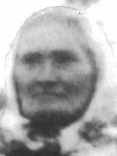

Født 25.11.1873 Vis datoavvik · Død 30.09.1933 · 59 år
Registrert ektefelle: Syver Olsen · 5 registrerte barn i dette utvalget. Familie
Familiekoblinger har forbehold – se familietabellen.
Datogrunnlag
Fødsel
Valgt dato: 25.11.1873
Full vurdering og kildebelegg for fødselDød
Valgt dato: 30.09.1933
Full vurdering og kildebelegg for dødForbehold og grunnlag
- Fokuspersonen: registrert med forbehold; foreløpig identitet.
- Syver Olsen Frøyse øvre: Ektefelle – Identitetsforbehold. Vurdering og kildebelegg i familietabellen
- Morten Olsen: Far – Identitetsforbehold. Vurdering og kildebelegg i familietabellen
- Ole Syversen Frøisevolden: Barn – Identitetsforbehold. Vurdering og kildebelegg i familietabellen
- Ivar Syversen Mikkelhus: Barn – Identitetsforbehold. Vurdering og kildebelegg i familietabellen
- Magnus Syversen Mikkelhus: Barn – Identitetsforbehold. Vurdering og kildebelegg i familietabellen
- Margit Syversdatter Mikkelhus: Barn – Identitetsforbehold. Vurdering og kildebelegg i familietabellen
- Borghild Syversdatter Mikkelhus: Barn – Identitetsforbehold. Vurdering og kildebelegg i familietabellen
- Ole Syversen Frøisevolden → Syver Olsen Frøyse øvre: Far – Identitetsforbehold. Vurdering og kildebelegg i barnets familietabell
- Ivar Syversen Mikkelhus → Syver Olsen Frøyse øvre: Far – Identitetsforbehold. Vurdering og kildebelegg i barnets familietabell
- Magnus Syversen Mikkelhus → Syver Olsen Frøyse øvre: Far – Identitetsforbehold. Vurdering og kildebelegg i barnets familietabell
- Margit Syversdatter Mikkelhus → Syver Olsen Frøyse øvre: Far – Identitetsforbehold. Vurdering og kildebelegg i barnets familietabell
- Borghild Syversdatter Mikkelhus → Syver Olsen Frøyse øvre: Far – Identitetsforbehold. Vurdering og kildebelegg i barnets familietabell
Primærnavn registrert med brukerens valgte ledd «Lier eie» · Foreløpig identitet; fødselsopplysningene har kildeavvik.
Personens forskningshistorikk · Forskningsoversikt
Livsløp
| Hendelse | Dato | Sted | Opplysning |
|---|---|---|---|
| Fødsel | 25.11.1873 Vis datoavvikK-0029: register og bilde av dåpsinnførsel 56 oppgir fødsel 25.11.1873, som er valgt hoveddato etter F-0032. Dåpsdatoen er 28.12.1873 og brukes ikke som fødselsdato. Tellingene K-0013/K-0015 oppgir avvikende 28.11.1873; K-0010 har 1874. Dåpsinnførselen prioriteres som primært fødselsgrunnlag, mens avvikene og ukjent feilårsak beholdes. | «Lier Eie» / «Lieeiet»; Østre GausdalStedsforbeholdIdentiteten mellom de historiske stedsformene er uavklart. Dåpen oppgir ikke barnets fødested; tellingen støtter bare området. | ForbeholdPersonkoblingen har forbehold; se samlet kildevurdering.13 kilder · vurderingFødsel · 25.11.1873 · Sted: «Lier Eie» / «Lieeiet»; Østre Gausdal Registrert:StedsforbeholdIdentiteten mellom de historiske stedsformene er uavklart. Dåpen oppgir ikke barnets fødested; tellingen støtter bare området.ForbeholdPersonkoblingen har forbehold; se samlet kildevurdering.Stedsgrunnlag før redaksjonell opprydding: «Lier Eie» (K-0005); «Lieeiet» (K-0006); Østre Gausdal (K-0009). Dato fra dåpsinnførselen. Tellingene oppgir 28.11.1873 og K-0010 har 1874; avvik beholdes. Dåpen oppgir ikke fødested; stedsidentitet er uavklart. DatoavvikK-0029: register og bilde av dåpsinnførsel 56 oppgir fødsel 25.11.1873, som er valgt hoveddato etter F-0032. Dåpsdatoen er 28.12.1873 og brukes ikke som fødselsdato. Tellingene K-0013/K-0015 oppgir avvikende 28.11.1873; K-0010 har 1874. Dåpsinnførselen prioriteres som primært fødselsgrunnlag, mens avvikene og ukjent feilårsak beholdes.K-0029 er lest i register og bilde av samme innførsel, ikke to uavhengige bekreftelser. Fødselsdato 25.11.1873 er registrert 04.11.2026; barnet har intet fødestedsfelt. Fars Li-Eie er ikke gjort til barnets fødested. De eldre kildene nedenfor gir retrospektive opplysninger; deres kildeformer beholdes. K-0013 gir den retrospektive datoen 28.11.1873. K-0005s bilde er foreløpig lest «Lie-Eie[?]»; K-0006 har «Lieeiet». Stedsidentitet/normalisering uavklart. K-0007 og K-0008 oppgir også 1873 ved sønnens dåp, uten fødested eller eksakt dato; identitetskobling godkjent med forbehold. K-0009 gir også 1873 og Østre Gausdal (T i bildet), uten eksakt dato eller gårdsfødested. K-0010 oppgir 1874 ved Ivars dåp 1902, i både register og bilde; avviket mot tidligere 1873 er bevart uten å erstatte det. Ingen eksakt dato eller fødested der. K-0011 oppgir 1873 ved Magnus’ dåp 1904, uten eksakt dato eller fødested; kildeavviket 1874 i K-0010 bevares. K-0012 oppgir også 1873 ved Margits dåp 1906, uten eksakt dato eller fødested; kildeavviket 1874 i K-0010 bevares. Registrert tillegg: K-0013 oppgir 28.11.1873 og Østre Gausdal ved tellingen 1910, retrospektivt; ingen kontrollert fødselsinnførsel. 1874-avviket fra K-0010 består. K-0014 oppgir 1873 ved Borghilds dåp 1911, uten eksakt dato eller fødested; den avvikende datoen 28.11.1873 fra K-0013 og 1874-avviket i K-0010 bevares. Registrert tillegg: K-0015 oppgir samme eksakte dato og Østre/Østr Gausdal retrospektivt, ikke en bestemt fødegård. Tidligere godkjente stedsantakelser og 1874-avviket i K-0010 beholdes.K-0028: Annonsen datert 30.09.1933 oppgir «nær 60 år». Registrert 04.11.2026 som omtrentlig aldersbelegg, forenlig med valgt 25.11.1873 og den tidligere retrospektive datoen 28.11.1873, men ingen selvstendig eksakt datobekreftelse eller løsning av 1873/1874-avviket. K-0005, K-0006, K-0007, K-0008, K-0009, K-0010, K-0011, K-0012, K-0013, K-0014, K-0015, K-0028, K-0029 |
| Dåp | 28.12.1873 | Gausdal sogn, Østre Gausdal prestegjeld | 1 kilde · vurderingDåp · 28.12.1873 · Sted: Gausdal sogn, Østre Gausdal prestegjeld Registrert:Stedsgrunnlag før redaksjonell opprydding: Gausdal sokn (kildeområde); bestemt kirke ukjent. døpt 28.12.1873, e-føring. K-0029, side 307–308, nr. 56: registeret har dåpsdato 12-28, år 1873 og e. Bildet har «Decb. 28» under «Døbte 1873» og gjentakelsesmerke i ægte/uægte-kolonnen. Bestemt kirke, dåpssted, hjemmedåp og fysisk nærvær er ikke oppgitt eller utledet. Ingen foreldrevielse registreres fra e-føringen. |
| Lysing | 02.05.1897 | — | 2 kilder · vurderingLysing · 02.05.1897 · Sted: — Registrert:Stedsgrunnlag før redaksjonell opprydding: Ikke fastslått. Knyttet til vielsen med Syver; ikke forlovelsesdato. Knyttet til vielsen med Syver. K-0005: bildelesning, registerfelt tomt. K-0006: register og bilde. Ingen forlovelsesdato utledet. |
| Vielse | 06.05.1897 Vis datoavvikFT 1920 har usikkert datoavvik «7/5[?] 1897». Hoveddato 06.05.1897 fra kirkebøkene beholdes; usikkert dagtall gir ingen ny vielse. | Gausdal sogn, Østre Gausdal prestegjeld | Viet Syver; første ekteskap for begge.3 kilder · vurderingVielse / bosted · 06.05.1897 · Sted: Gausdal sogn, Østre Gausdal prestegjeld Registrert: Viet Syver; første ekteskap for begge.DatoavvikFT 1920 har usikkert datoavvik «7/5[?] 1897». Hoveddato 06.05.1897 fra kirkebøkene beholdes; usikkert dagtall gir ingen ny vielse.Stedsgrunnlag før redaksjonell opprydding: Gausdal sokn (kildeområde); bestemt kirke/vielsessted ukjent. Viet Syver; første ekteskap for begge. Bosted er ikke vielsessted; bestemt kirke ukjent. FT 1920 har usikkert datoavvik; hoveddato 06.05.1897 beholdes. Brur til Syver Olsen; første ekteskap for begge. «Hovdbakken» er oppgitt som hennes bosted i K-0006; K-0005s bostedsfelt er tomt. K-0006 har «Ikke i slægt», en kildemerknad, ikke en selvstendig slektsutredning. Ingen flyttedato eller likestilling med Hovde. Registrert kildeavvik fra Johannes personseddel i 1920: når gift foreløpig lest «7/5[?] 1897», usikkert dagtall. Hoveddato 06.05.1897 fra kirkebøkene beholdes. Blyanttilføyelsen 1874 har uavklart funksjon; ingen ny vielse eller ny tolkning. |
| Forelder / bosted ved sønnens dåp | 20.02.1898 | «Frøisevolden»StedsforbeholdDen historiske stedsidentiteten er uavklart; kildeformen er beholdt. | Mor til Ole.ForbeholdPersonkoblingen har forbehold; se samlet kildevurdering.2 kilder · vurderingForelder / bosted ved sønnens dåp · 20.02.1898 · Sted: «Frøisevolden» Registrert: Mor til Ole.StedsforbeholdDen historiske stedsidentiteten er uavklart; kildeformen er beholdt.ForbeholdPersonkoblingen har forbehold; se samlet kildevurdering.Forelder til Ole; foreldrebosted «Frøisevolden». Identitets- og stedsforbehold beholdt. Registrert: forelder til Ole Syversen Frøisevolden. Begge bilder har felles foreldrebosted. K-0007s register fører bostedet bare på moren; K-0008s register fører det på begge. Identitetskobling godkjent med forbehold. Ingen flyttedato, sikker tilstedeværelse eller stedsidentitet utledet. |
| Stilling ved sønnens dåp | 20.02.1898 | «Frøisevolden»StedsforbeholdDen historiske stedsidentiteten er uavklart; kildeformen er beholdt. | Hustru.1 kilde · vurderingStilling ved sønnens dåp · 20.02.1898 · Sted: «Frøisevolden» Registrert: Hustru.StedsforbeholdDen historiske stedsidentiteten er uavklart; kildeformen er beholdt.«h.» / «og h.» tolket hustru; ingen ny vielse eller sikker tilstedeværelse utledet. Registrert: «h.» i registeret og «og h.» i bildet, tolket hustru. Ingen ny vielse eller sikker tilstedeværelse utledet. |
| Folketelling | 03.12.1900 | Mikkelhus | Bosatt og tilstede i tellingens husholdning.ForbeholdPersonkoblingen er godkjent med forbehold.1 kilde · vurderingFolketelling / bosted · 03.12.1900 · Sted: Mikkelhus Registrert: Bosatt og tilstede i tellingens husholdning.ForbeholdPersonkoblingen er godkjent med forbehold.Registrert i tellingens husholdning; personkobling med forbehold, ingen flyttedato utledet. Registrert: person 002, husholdning 01, «b», «hm»/«g» (husmor, gift). Bosatt/tilstede etter skjemaet. Sannsynlig identitetskobling godkjent med forbehold; ingen flyttedato eller stedssammenslåing. Johannes/Matea står i egen husholdning 02. |
| Arbeid | 03.12.1900 | Mikkelhus | Husmandskone. |
| Forelder / bosted og stand ved sønnens dåp | 04.05.1902 | Mikkelhus | Mor til Ivar.ForbeholdPersonkoblingen har forbehold; se samlet kildevurdering.1 kilde · vurderingForelder / bosted og stand ved sønnens dåp · 04.05.1902 · Sted: Mikkelhus Registrert: Mor til Ivar.ForbeholdPersonkoblingen har forbehold; se samlet kildevurdering.Forelder oppgitt med «hustru» og bosted Mikkelhus; sannsynlig identitetskobling. Registrert: forelder til Ivar Syversen Mikkelhus, oppgitt «hustru». Sannsynlig identitetskobling godkjent med forbehold i F-0010. Ingen flyttedato, sikker fysisk tilstedeværelse eller eiendomsrett utledet. |
| Forelder / bosted og stand ved sønnens dåp | 12.05.1904 | Mikkelhus | Mor til Magnus.ForbeholdPersonkoblingen har forbehold; se samlet kildevurdering.1 kilde · vurderingForelder / bosted og stand ved sønnens dåp · 12.05.1904 · Sted: Mikkelhus Registrert: Mor til Magnus.ForbeholdPersonkoblingen har forbehold; se samlet kildevurdering.Forelder oppgitt med «hustru» og bosted Mikkelhus; sannsynlig identitetskobling. Registrert: forelder til Magnus Syversen Mikkelhus, oppgitt «hustru». Sannsynlig identitetskobling godkjent med forbehold i F-0011. Ingen flyttedato, sikker fysisk tilstedeværelse eller eiendomsrett utledet. |
| Forelder / bosted og foreløpig stand ved datterens dåp | 11.11.1906 | Mikkelhus | Mor til Margit.ForbeholdPersonkoblingen har forbehold. Standen er usikker bildelesning; registerfeltet er tomt.1 kilde · vurderingForelder / bosted og foreløpig stand ved datterens dåp · 11.11.1906 · Sted: Mikkelhus Registrert: Mor til Margit.ForbeholdPersonkoblingen har forbehold. Standen er usikker bildelesning; registerfeltet er tomt.Forelder med bosted Mikkelhus; sannsynlig identitet. Stand foreløpig bildelesning, registerfelt tomt. Registrert: forelder til Margit Syversdatter Mikkelhus. Eget registerbosted og bildets felles foreldrebostedsfelt. Sannsynlig identitetskobling godkjent med forbehold i F-0012. Stand foreløpig «Hstr.[?]» fra egen bildelesning; registerfelt tomt, ingen sikker yrkesendring utledet. Fadderfeltet er bare delvis lest, se kildenotatet. Ingen flyttedato, sikker fysisk tilstedeværelse eller eiendomsrett utledet. |
| Folketelling | 01.12.1910 | Mikkelhus | Bosatt og tilstede i tellingens husholdning.ForbeholdPersonkoblingen er godkjent med forbehold.1 kilde · vurderingFolketelling / bosted · 01.12.1910 · Sted: Mikkelhus Registrert: Bosatt og tilstede i tellingens husholdning.ForbeholdPersonkoblingen er godkjent med forbehold.Registrert i tellingens husholdning; personkobling med forbehold, ingen flyttedato utledet. Registrert: person 002, husholdning 01, b, hm/g. Bosatt og tilstede etter skjemaet; sannsynlig identitetskobling godkjent med forbehold i F-0013. Ingen flyttedato eller ny vielse utledet. |
| Arbeid | 01.12.1910 | Mikkelhus | Husmd.kone husgjern.1 kilde · vurderingArbeid · 01.12.1910 · Sted: Mikkelhus Registrert: Husmd.kone husgjern.«Husmd.kone husgjern» fra registeret; ikke dokumentert eierskap eller livslang stilling. Registrert: «Husmd.kone husgjern» fra registeret; bildets gjentakelsestegn og usikre forkortelser er bevart i kildenotatet. Ingen eierskapsutledning eller utvidelse til hele livet. |
| Forelder / bosted og foreløpig stand ved datterens dåp | 20.08.1911 | Mikkelhus | Mor til Borghild.ForbeholdPersonkoblingen har forbehold. Standen er usikker bildelesning; registerfeltet er tomt.1 kilde · vurderingForelder / bosted og foreløpig stand ved datterens dåp · 20.08.1911 · Sted: Mikkelhus Registrert: Mor til Borghild.ForbeholdPersonkoblingen har forbehold. Standen er usikker bildelesning; registerfeltet er tomt.Forelder med bosted Mikkelhus; sannsynlig identitet. Stand foreløpig bildelesning, registerfelt tomt. Registrert: forelder til Borghild Syversdatter Mikkelhus. Eget registerbosted og bildets felles foreldrebostedsfelt. Sannsynlig identitetskobling godkjent med forbehold i F-0014. Stand foreløpig «hstr.[?]» fra egen bildelesning; registerfelt tomt, ingen sikker yrkesendring utledet. Fadderfeltet er bare delvis lest, se kildenotatet. Ingen flyttedato, sikker fysisk tilstedeværelse eller eiendomsrett utledet. |
| Folketelling | 01.12.1920 | Mikkelhus | Bosatt og tilstede i tellingens husholdning.ForbeholdPersonkoblingen er godkjent med forbehold.1 kilde · vurderingFolketelling / bosted · 01.12.1920 · Sted: Mikkelhus Registrert: Bosatt og tilstede i tellingens husholdning.ForbeholdPersonkoblingen er godkjent med forbehold.Registrert i tellingens husholdning; personkobling med forbehold, ingen flyttedato utledet. Registrert: person 002, husholdning 01, hu/g. Fast bosatt Ja og tilstede natt til 1. desember Ja i egen personseddel; bostatusfeltet er tomt i registeret. Sannsynlig identitetskobling godkjent med forbehold i F-0015. Ingen flyttedato eller ny vielse. |
| Arbeid / livsstilling | 01.12.1920 | Mikkelhus | Husmor; bierverv Nei.1 kilde · vurderingArbeid / livsstilling · 01.12.1920 · Sted: Mikkelhus Registrert: Husmor; bierverv Nei.Datert livsstilling fra tellingen; ikke arbeid/inntekt hele livet. Registrert: Husmor (levevei), bierverv Nei; forsørgerens hovederverv Husmand. Datert kildetekst, ikke en påstand om arbeid/inntekt hele livet. |
| Statsborgerskap / trossamfunn | 01.12.1920 | — | Norge og Statskirken.1 kilde · vurderingStatsborgerskap / trossamfunn (oppgitt) · 01.12.1920 · Sted: — Registrert: Norge og Statskirken.Stedsgrunnlag før redaksjonell opprydding: Ikke eget hendelsessted. Norge og Statskirken understreket i personseddelen; datert kildeopplysning. Registrert: Norge og Statskirken er understreket i egen personseddel. Datert kildeføring, ikke etnisitetsutledning eller ny dåpshendelse. |
| Barn i nåværende ekteskap (oppgitt) | 01.12.1920 | — | Fem barn i ekteskapet, alle i live.1 kilde · vurderingBarn i nåværende ekteskap (oppgitt) · 01.12.1920 · Sted: — Registrert: Fem barn i ekteskapet, alle i live.Stedsgrunnlag før redaksjonell opprydding: Ikke eget hendelsessted. Fem barn i nåværende ekteskap, fem i live ifølge personseddelen; ikke livslang barnerekke. Registrert: personseddelen oppgir fem barn i nåværende ekteskap, fem i live. Ikke garanti for en uttømmende livslang barnerekke; ingen nye barn/identiteter. |
| Død | 30.09.1933 | «Røde Kors, Follebu» | ForbeholdDødsdatoen er utledet fra «idag» og annonsens dateringslinje. Avis og publiseringsdato er ukjent.1 kilde · vurderingDød · 30.09.1933 · Sted: «Røde Kors, Follebu» Registrert:ForbeholdDødsdatoen er utledet fra «idag» og annonsens dateringslinje. Avis og publiseringsdato er ukjent.Utledet dødsdato fra «idag» og dateringslinjen. Oppgitt dødssted; institusjon/bygning ikke nærmere identifisert. K-0028 er datert «Ø. Gausdal 30. 9. 1933.» og sier at Johanne døde «idag på Røde Kors, Follebu». Ø. Gausdal er dateringssted, ikke nytt bosted eller gravsted. Avis, publiseringsdato og side er ukjent; datoen er ikke hentet fra en separat dødsregistrering. Ingen dødsårsak, begravelsesdato eller moderne institusjonskobling er utledet. Registrert 04.11.2026 etter F-0031. |
Udaterte hendelser
| Hendelse | Dato | Sted | Opplysning |
|---|---|---|---|
| Konfirmasjon / altergang | Datoer ukjent; omtalt ved vielsen 1897 | «Ø. Gausdal» | 1 kilde · vurderingKonfirmasjon / altergang (oppgitt) · Datoer ukjent; omtalt ved vielsen 1897 · Sted: «Ø. Gausdal» Registrert:Retrospektivt oppgitt ved vielsen; hendelsesdatoer og bestemt kirke ukjent. Registerets to felt og bildets fellesføring «a og b Ø. Gausdal»; ingen hendelsesdatoer eller bestemt kirke utledet. |
Familie
| Relasjon | Person | Merknad |
|---|---|---|
| Ektefelle | Syver Olsen Frøyse øvre (1874–1975) | Viet 06.05.1897; to bokinnførsler knyttet til samme hendelse.Vurdering og kildebeleggRegistrert: Viet 06.05.1897; to bokinnførsler knyttet til samme hendelse. Viet 06.05.1897; to bokinnførsler er koblet til samme hendelse på samlet grunnlag.K-0028: Dødsannonsen datert 30.09.1933 har «Min kjære hustru», navnet Johanne og underskriften Syver Mikkelhus. Brukerens identifikasjon og samlet familie-/navne-/aldersgrunnlag er godkjent i F-0031. Støttebelegg til eksisterende ekteskap, ikke ny vigselsdato. Generelle mor-/svigermor-/bestemorroller gir ingen bestemte nye personkoblinger. |
| Far | Morten Olsen | Morten Olsen fra dåp og klokkerbokvielse; Martin-formen i ministerialboken beholdes som avvik. Ingen foreldrevielse utledes.Vurdering og kildebeleggRegistrert: Morten Olsen fra dåp og klokkerbokvielse; Martin-formen i ministerialboken beholdes som avvik. Ingen foreldrevielse utledes. Foreløpig kobling mellom K-0005s «Martin Olsen» og K-0006s «Morten Olsen». De eldre vielseskildene ga ingen mor/foreldrevielse.K-0029: Morten Olsen er eksplisitt far ved dåpen 28.12.1873. Koblingen til P-0009 bygger på samme Johanne og samlet navn-/år-/stedskontekst, godkjent i F-0032. Dåpen støtter Morten-formen, men feilårsaken til Martin-avviket er ikke dokumentert. Intet foreldreekteskap utledes. |
| Barn | Ole Syversen Frøisevolden (1898–1985) | Oppgitt som barn ved dåpen; identitetsforbehold og uavklart plass i full barnerekke.Vurdering og kildebeleggRegistrert: Oppgitt som barn ved dåpen; identitetsforbehold og uavklart plass i full barnerekke. Registrert: oppgitt som forelder ved dåpen 20.02.1898; sannsynlig identitetskobling godkjent på samlet grunnlag med forbehold. Ikke fastslått som første barn. K-0009 fører Ole som s hos husfar/husmor i husholdning 01 i 1900. K-0013 fører samme familiegruppe i husholdning 01 i 1910, med godkjente identitetsforbehold; morskap bygger fortsatt på de eksplisitte dåpskildene. K-0015 fører samme familiegruppe i husholdning 01 i 1920 med godkjente identitetsforbehold; tidligere eksplisitte dåpsforeldre er fortsatt grunnlaget for foreldrekoblingene. |
| Barn | Ivar Syversen Mikkelhus (f. 1902) | Oppgitt som barn ved dåpen; identitetsforbehold og uavklart plass i full barnerekke.Vurdering og kildebeleggRegistrert: Oppgitt som barn ved dåpen; identitetsforbehold og uavklart plass i full barnerekke. Registrert: oppgitt som forelder ved dåpen 04.05.1902; sannsynlig identitetskobling godkjent med forbehold i F-0010. Ingen plass i en fullstendig barnerekke fastslått. K-0013 fører samme familiegruppe i husholdning 01 i 1910, med godkjente identitetsforbehold; morskap bygger fortsatt på de eksplisitte dåpskildene. K-0015 fører samme familiegruppe i husholdning 01 i 1920 med godkjente identitetsforbehold; tidligere eksplisitte dåpsforeldre er fortsatt grunnlaget for foreldrekoblingene. |
| Barn | Magnus Syversen Mikkelhus (f. 1904) | Oppgitt som barn ved dåpen; identitetsforbehold og uavklart plass i full barnerekke.Vurdering og kildebeleggRegistrert: Oppgitt som barn ved dåpen; identitetsforbehold og uavklart plass i full barnerekke. Registrert: oppgitt som forelder ved dåpen 12.05.1904; sannsynlig identitetskobling godkjent med forbehold i F-0011. Ingen plass i en fullstendig barnerekke fastslått. K-0013 fører samme familiegruppe i husholdning 01 i 1910, med godkjente identitetsforbehold; morskap bygger fortsatt på de eksplisitte dåpskildene. K-0015 fører samme familiegruppe i husholdning 01 i 1920 med godkjente identitetsforbehold; tidligere eksplisitte dåpsforeldre er fortsatt grunnlaget for foreldrekoblingene. |
| Barn | Margit Syversdatter Mikkelhus (f. 1906) | Oppgitt som barn ved dåpen; identitetsforbehold og uavklart plass i full barnerekke.Vurdering og kildebeleggRegistrert: Oppgitt som barn ved dåpen; identitetsforbehold og uavklart plass i full barnerekke. Registrert: oppgitt som forelder ved dåpen 11.11.1906; sannsynlig identitetskobling godkjent med forbehold i F-0012. Ingen plass i en fullstendig barnerekke fastslått. K-0013 fører samme familiegruppe i husholdning 01 i 1910, med godkjente identitetsforbehold; morskap bygger fortsatt på de eksplisitte dåpskildene. K-0015 fører samme familiegruppe i husholdning 01 i 1920 med godkjente identitetsforbehold; tidligere eksplisitte dåpsforeldre er fortsatt grunnlaget for foreldrekoblingene. |
| Barn | Borghild Syversdatter Mikkelhus (f. 1911) | Oppgitt som barn ved dåpen; identitetsforbehold og uavklart plass i full barnerekke.Vurdering og kildebeleggRegistrert: Oppgitt som barn ved dåpen; identitetsforbehold og uavklart plass i full barnerekke. Registrert: oppgitt som forelder ved dåpen 20.08.1911; sannsynlig identitetskobling godkjent med forbehold i F-0014. Ingen plass i en fullstendig barnerekke fastslått. K-0015 fører samme familiegruppe i husholdning 01 i 1920 med godkjente identitetsforbehold; tidligere eksplisitte dåpsforeldre er fortsatt grunnlaget for foreldrekoblingene. |
Navn
| Navneform | Grunnlag |
|---|---|
| Johanne Mortensdatr. | Belegg og forbeholdBeleggstype: Kildenavn; primærnavnets navnekjerne Belegg: 06.05.1897; 20.02.1898 Grunnlag: Registrert: Kildeskrevet form; identitets-/leseforbehold i detaljene. Dokumenterte enkeltbelegg: 06.05.1897; 20.02.1898 Registrert: Kildeskrevet form; identitets-/leseforbehold i detaljene. 06.05.1897: foretrukket etter godkjent K-0006-lesning. Også kildeform ved sønnens dåp 20.02.1898 i K-0008. Historisk fødselsnavn ikke kontrollert; avviket mot K-0005 beholdes. |
| Johanne Martinsdtr | Belegg og forbeholdBeleggstype: Avvikende kildenavn; tidligere primærnavnets navnekjerne Belegg: 06.05.1897 Grunnlag: Registrert: Kildeskrevet form; identitets-/leseforbehold i detaljene. Dokumenterte enkeltbelegg: 06.05.1897 Registrert: Kildeskrevet form; identitets-/leseforbehold i detaljene. 06.05.1897: registerform bevart uten utvidelse eller korrigering. |
| Johanne Mortensdtr | Belegg og forbeholdBeleggstype: Kildenavn Belegg: 20.02.1898 Grunnlag: Registrert: Kildeskrevet form; identitets-/leseforbehold i detaljene. Dokumenterte enkeltbelegg: 20.02.1898 Registrert: Kildeskrevet form; identitets-/leseforbehold i detaljene. Registrert: 20.02.1898, registerform ved sønnens dåp, bevart uten endring av primærnavnet; identitetskobling godkjent med forbehold. |
| Johanne Mortensdatter | Belegg og forbeholdBeleggstype: Kildenavn Belegg: 03.12.1900; 01.12.1910 Grunnlag: Registrert: Kildeskrevet form; identitets-/leseforbehold i detaljene. Dokumenterte enkeltbelegg: 03.12.1900; 01.12.1910 Registrert: Kildeskrevet form; identitets-/leseforbehold i detaljene. Registrert: 03.12.1900, full registerform i K-0009; sannsynlig identitetskobling godkjent med forbehold. Primærnavnet er bevart. Registrert tillegg: 01.12.1910, K-0013 gir denne navneformen og eget tellingsbosted Mikkelhus, med godkjent identitetsforbehold. Tidligere navnegrunnlag er bevart; ingen primærnavneendring. |
| Johanne Mortensdatr. Hovdbakken | Belegg og forbeholdBeleggstype: Kildenavn (egen bildelesning) Belegg: 06.05.1897 Grunnlag: Registrert: Kildeskrevet form; identitets-/leseforbehold i detaljene. Dokumenterte enkeltbelegg: 06.05.1897 Registrert: Kildeskrevet form; identitets-/leseforbehold i detaljene. Registrert: 06.05.1897: samlet navn/bostedsledd i navnefeltet i K-0006, over linjeskift i patronymet. Registeret har navn og eget bosted separat. Godkjent identitetsforbehold; ikke likestilt med Hovde/Hovdebakken. |
| Johanne Mortensdtr Frøisevolden | Belegg og forbeholdBeleggstype: Bostedsbasert navnevariant (utledet) Belegg: 20.02.1898 Grunnlag: Registrert: Utledet; ikke direkte kildeskrevet form. Person-/stedsforbehold beholdt. Dokumenterte enkeltbelegg: 20.02.1898 Registrert: Utledet; ikke direkte kildeskrevet form. Person-/stedsforbehold beholdt. Registrert: 20.02.1898: K-0007s navneform og morens eget registerbosted. Godkjent personkobling med forbehold; stavemåten er beholdt fra denne omtalen. |
| Johanne Mortensdatr. Frøisevolden | Belegg og forbeholdBeleggstype: Bostedsbasert navnevariant (utledet) Belegg: 20.02.1898 Grunnlag: Registrert: Utledet; ikke direkte kildeskrevet form. Person-/stedsforbehold beholdt. Dokumenterte enkeltbelegg: 20.02.1898 Registrert: Utledet; ikke direkte kildeskrevet form. Person-/stedsforbehold beholdt. Registrert: 20.02.1898: K-0008s navneform og morens eget registerbosted. Samme dåp som K-0007, med en annen faktisk navneform, ikke en fritt konstruert kombinasjon. |
| Johanne Mortensdatter Mikkelhus | Belegg og forbeholdBeleggstype: Bostedsbasert navnevariant (utledet) Belegg: 03.12.1900; 01.12.1910 Grunnlag: Registrert: Utledet; ikke direkte kildeskrevet form. Person-/stedsforbehold beholdt. Dokumenterte enkeltbelegg: 03.12.1900; 01.12.1910 Registrert: Utledet; ikke direkte kildeskrevet form. Person-/stedsforbehold beholdt. Registrert: 03.12.1900: registerets navneform og eget tellingsbosted. Sannsynlig personkobling godkjent i F-0009; ingen endring av primærnavn eller sorteringsledd. Registrert tillegg: 01.12.1910, K-0013 gir denne navneformen og eget tellingsbosted Mikkelhus, med godkjent identitetsforbehold. Tidligere navnegrunnlag er bevart; ingen primærnavneendring. |
| Johanne Mortensdatter Mikkelhus | Belegg og forbeholdBeleggstype: Kildenavn (register og egen bildelesning) Belegg: 01.12.1920 Grunnlag: Registrert: Kildeskrevet form; identitets-/leseforbehold i detaljene. Dokumenterte enkeltbelegg: 01.12.1920 Registrert: Kildeskrevet form; identitets-/leseforbehold i detaljene. Registrert: 01.12.1920 i K-0015 står hele Johanne Mortensdatter Mikkelhus eksplisitt i register og egen personseddel. Tidligere utledede belegg er fortsatt utledet, og andre kildeformer er bevart. Ingen primærnavne-/sorteringsendring eller arvelig slektsnavn utledet. |
| Johanne Mortensdatr. Lier eie | Belegg og forbeholdBeleggstype: Primærnavn med brukervalgt ledd Belegg: 06.05.1897 Grunnlag: Registrert: Brukervalgt ledd; ikke direkte samlet kildenavn eller eget bostedsbelegg. Dokumenterte enkeltbelegg: 06.05.1897 Registrert: Brukervalgt ledd; ikke direkte samlet kildenavn eller eget bostedsbelegg. Registrert: 06.05.1897: nåværende primærnavn etter beslutningen i F-0006. Lier eie var uttrykkelig valgt i F-0005 fra oppgitt fødested, ikke eget bosted. Ingen påstand om at hele formen står i kilden. |
| Johanne Martinsdtr Lier eie | Belegg og forbeholdBeleggstype: Tidligere primærnavn med brukervalgt ledd Belegg: 06.05.1897 Grunnlag: Registrert: Brukervalgt ledd; ikke direkte samlet kildenavn eller eget bostedsbelegg. Dokumenterte enkeltbelegg: 06.05.1897 Registrert: Brukervalgt ledd; ikke direkte samlet kildenavn eller eget bostedsbelegg. Registrert: 06.05.1897: F-0005s uttrykkelige navnevalg fra navnet Johanne Martinsdtr og oppgitt fødested Lier Eie. Senere erstattet som primærnavn etter F-0006; ikke direkte bostedsbelegg eller samlet kildenavn. |
| Johanne Mortensdttr. | Belegg og forbeholdBeleggstype: Kildenavn (register) Belegg: 04.05.1902; 12.05.1904 Grunnlag: Registrert: Kildeskrevet form; identitets-/leseforbehold i detaljene. Dokumenterte enkeltbelegg: 04.05.1902; 12.05.1904 Registrert: Kildeskrevet form; identitets-/leseforbehold i detaljene. Registrert: 04.05.1902, registerform ved Ivars dåp; sannsynlig identitetskobling godkjent med forbehold. Bildets siste forkortelse er usikkert avgrenset. Primærnavnet bevart. Også registrert 12.05.1904 i K-0011, med navneformen og eget foreldrebosted Mikkelhus; identitetskobling godkjent med forbehold. |
| Johanne Mortensdttr. Mikkelhus | Belegg og forbeholdBeleggstype: Bostedsbasert navnevariant (utledet) Belegg: 04.05.1902; 12.05.1904 Grunnlag: Registrert: Utledet; ikke direkte kildeskrevet form. Person-/stedsforbehold beholdt. Dokumenterte enkeltbelegg: 04.05.1902; 12.05.1904 Registrert: Utledet; ikke direkte kildeskrevet form. Person-/stedsforbehold beholdt. Registrert: 04.05.1902: registerets navneform og eget foreldrebosted; ikke samlet kildenavn, arvelig slektsnavn eller flyttedato. Også registrert 12.05.1904 i K-0011, med navneformen og eget foreldrebosted Mikkelhus; identitetskobling godkjent med forbehold. |
| Johanne Mortensdtr. | Belegg og forbeholdBeleggstype: Kildenavn (register) Belegg: 11.11.1906; 20.08.1911 Grunnlag: Registrert: Kildeskrevet form; identitets-/leseforbehold i detaljene. Dokumenterte enkeltbelegg: 11.11.1906; 20.08.1911 Registrert: Kildeskrevet form; identitets-/leseforbehold i detaljene. Registrert: 11.11.1906 ved Margits dåp; avsluttende punktum er bevart, til forskjell fra K-0007s form uten punktum. Sannsynlig identitetskobling godkjent med forbehold; primærnavn bevart. Registrert tillegg: 20.08.1911 i K-0014, samme registerform og eget bosted Mikkelhus. Godkjent identitetsforbehold; tidligere navnegrunnlag og primærnavn bevart. |
| Johanne Mortensdtr. Mikkelhus | Belegg og forbeholdBeleggstype: Bostedsbasert navnevariant (utledet) Belegg: 11.11.1906; 20.08.1911 Grunnlag: Registrert: Utledet; ikke direkte kildeskrevet form. Person-/stedsforbehold beholdt. Dokumenterte enkeltbelegg: 11.11.1906; 20.08.1911 Registrert: Utledet; ikke direkte kildeskrevet form. Person-/stedsforbehold beholdt. Registrert: 11.11.1906: registerets navneform og eget bostedsfelt Mikkelhus. Ikke samlet kildenavn, arvelig slektsnavn eller flyttedato; godkjent identitetsforbehold. Registrert tillegg: 20.08.1911 i K-0014, samme registerform og eget bosted Mikkelhus. Godkjent identitetsforbehold; tidligere navnegrunnlag og primærnavn bevart. |
| Johanne | Belegg og forbeholdBeleggstype: Kildenavn Belegg: 28.12.1873; 30.09.1933 Grunnlag: Registrert: eksplisitt fornavn i dåpsregister og bilde K-0029, 28.12.1873, og annonse datert 30.09.1933. Ingen patronym/etternavn står ved hennes navn; primærnavn og øvrige kildeformer beholdes. Avis og publiseringsdato ukjent. Dokumenterte enkeltbelegg: 28.12.1873; 30.09.1933 Registrert: eksplisitt fornavn i dåpsregister og bilde K-0029, 28.12.1873, og annonse datert 30.09.1933. Ingen patronym/etternavn står ved hennes navn; primærnavn og øvrige kildeformer beholdes. Avis og publiseringsdato ukjent. |
Navnekomponenter og arvelig slektsnavn
| Navneform | Grunnlag |
|---|---|
| Johanne / Mortensdatr. | Belegg og forbeholdBeleggstype: Fornavn / patronymisk navneform Belegg: 06.05.1897 Grunnlag: Registrert: Kildeskrevet form; identitets-/leseforbehold i detaljene. Dokumenterte enkeltbelegg: 06.05.1897 Registrert: Kildeskrevet form; identitets-/leseforbehold i detaljene. Kildeskrevet; ikke et selvstendig belegg for et arvelig slektsnavn. |
| Lier eie | Belegg og forbeholdBeleggstype: Bostedsledd i primærnavn, brukerens valg Belegg: 06.05.1897 Grunnlag: Registrert: Brukervalgt ledd; ikke direkte samlet kildenavn eller eget bostedsbelegg. Dokumenterte enkeltbelegg: 06.05.1897 Registrert: Brukervalgt ledd; ikke direkte samlet kildenavn eller eget bostedsbelegg. Brukeren bestemte formen fra oppgitt fødested «Lier Eie». Ikke dokumentert eget bosted eller verifisert normalisering; kildeformen beholdes. |
| Johanne Mortensdatter | Belegg og forbeholdBeleggstype: Patronymisk navnevariant (utledet ved dåpen) Belegg: 28.12.1873 Grunnlag: Registrert: Mortensdatter utledet fra far Morten. Barnet heter bare Johanne i denne innførselen. Dette belegget er adskilt fra senere eksplisitte Mortens-former; primærnavn beholdes. Dokumenterte enkeltbelegg: 28.12.1873 Registrert: Mortensdatter utledet fra far Morten. Barnet heter bare Johanne i denne innførselen. Dette belegget er adskilt fra senere eksplisitte Mortens-former; primærnavn beholdes. |
Åpne spørsmål
Avvik som må vurderes
-
Hva forklarer avvikende 28.11.1873 i tellingene og 1874 ved Ivars dåp, samt vielsens Martin/Martinsdtr mot Morten/Mortens-formene?
Hva forklarer avvikende 28.11.1873 i tellingene og 1874 ved Ivars dåp, samt vielsens Martin/Martinsdtr mot Morten/Mortens-formene? Valgt dato 25.11.1873 og mor er registrert fra K-0029; eldre kildeformer og ukjent feilårsak er bevart. F-0032 avslutter spørsmålet om valgt dato og registrert mor, men ikke forklaringen på avvikene.
-
Er «Lier Eie» og «Lieeiet» samme sted, og hvilken historisk plass gjelder det?
Er «Lier Eie» og «Lieeiet» samme sted, og hvilken historisk plass gjelder det? Se grunnlaget i K-0006.
Videre forskning
-
Hvordan knyttes brukerens valgte navneledd «Lier eie» og det oppgitte bostedet «Hovdbakken» til dokumenterte historiske steder?
Hvordan knyttes brukerens valgte navneledd «Lier eie» og det oppgitte bostedet «Hovdbakken» til dokumenterte historiske steder? Se grunnlaget i K-0006.